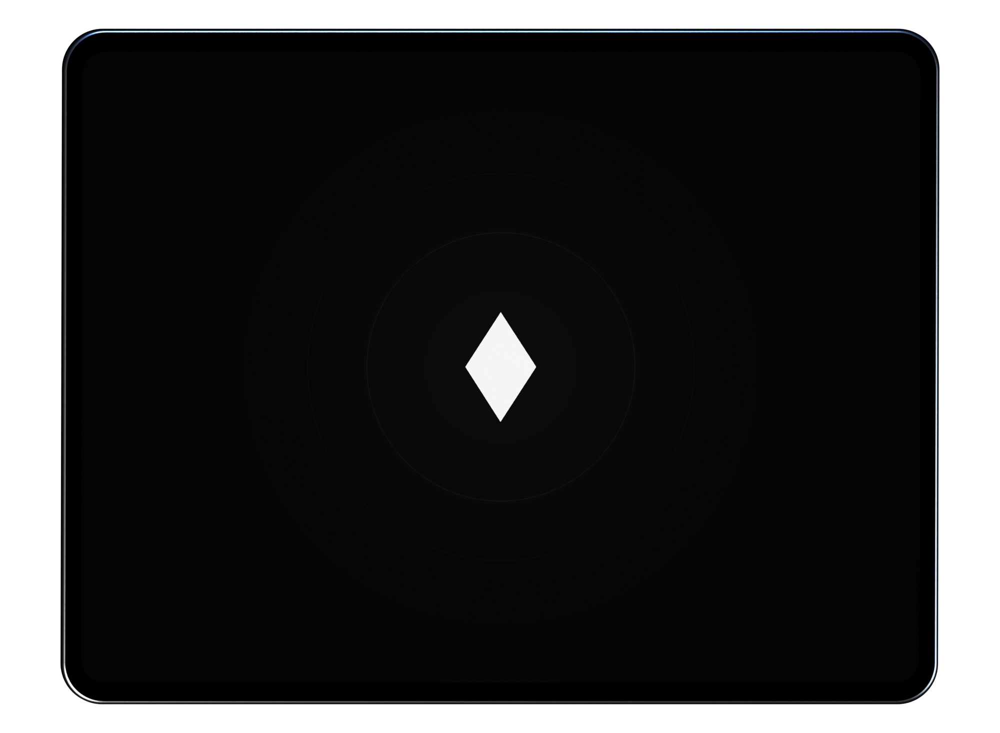
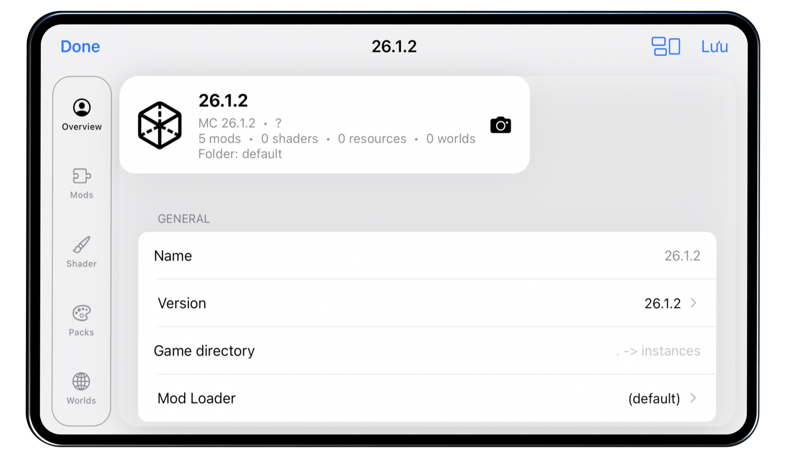
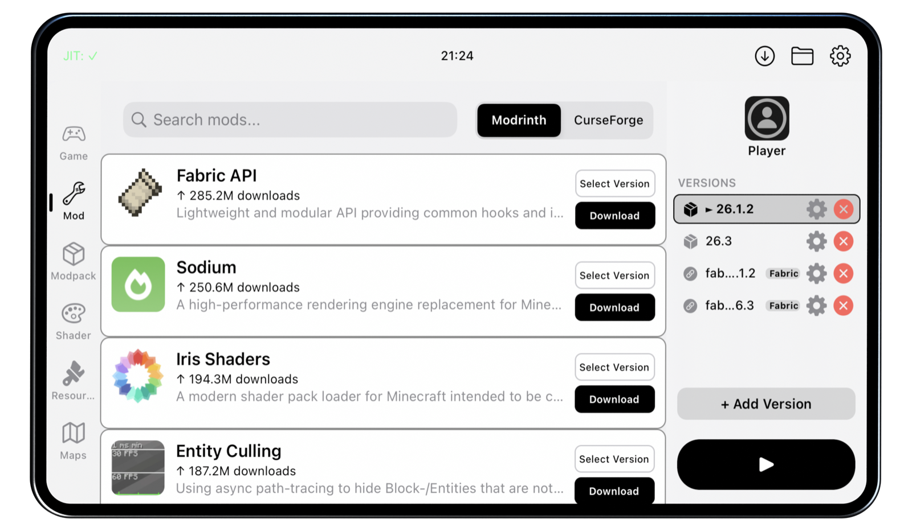
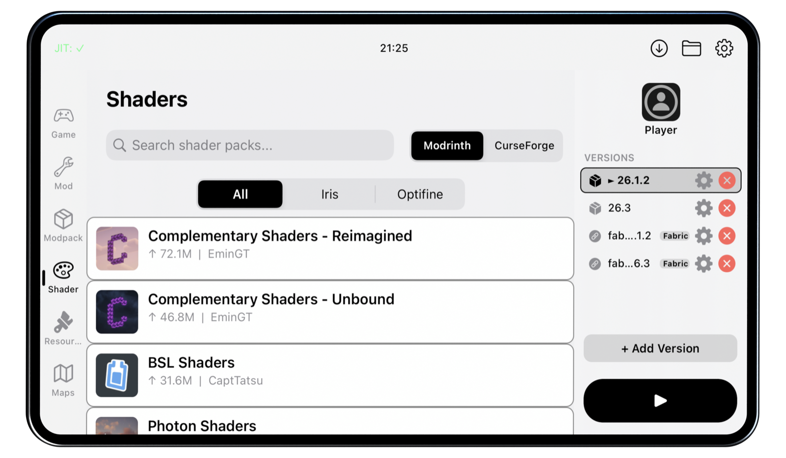
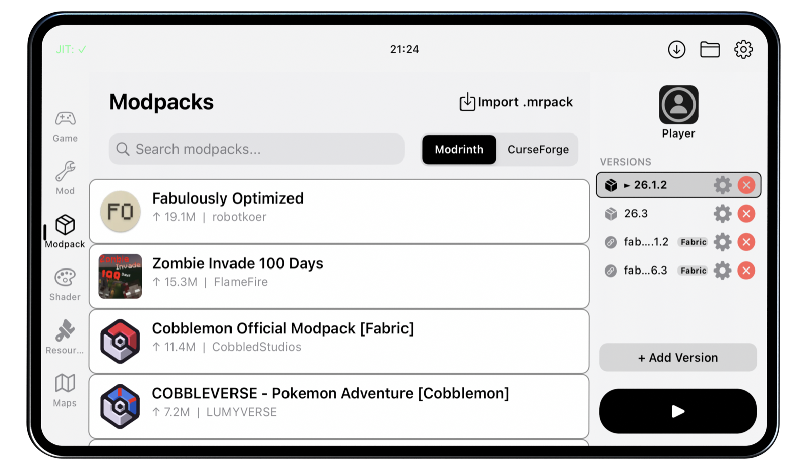
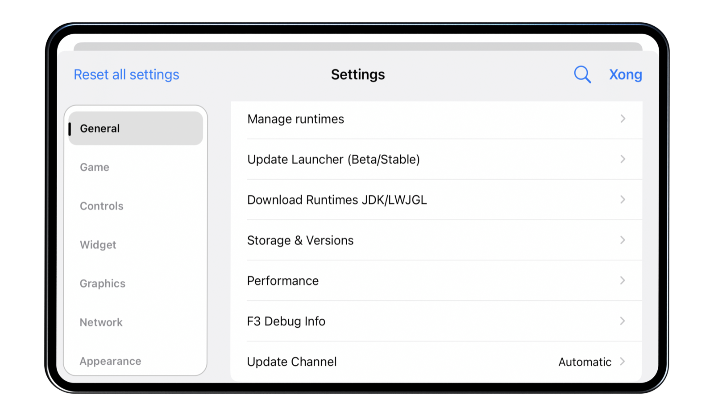
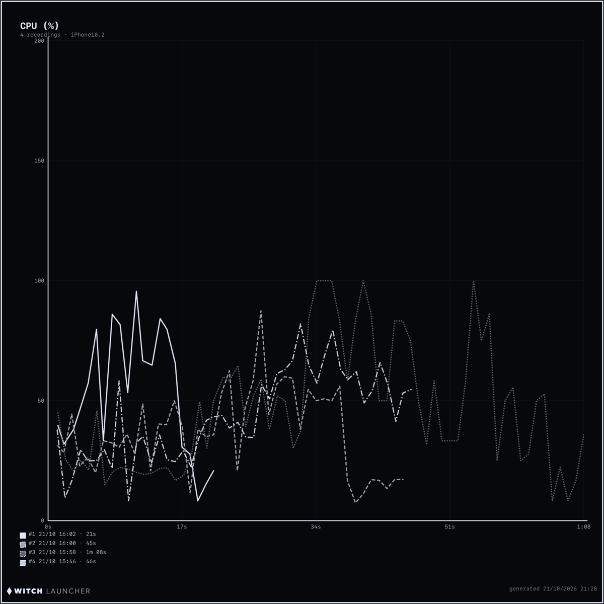
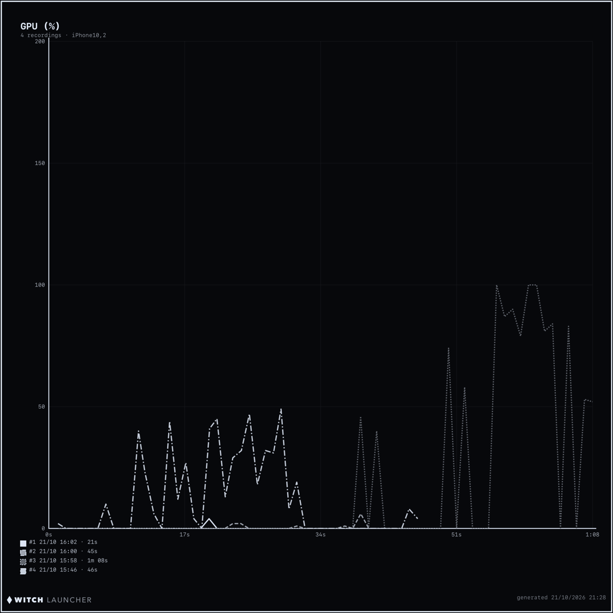
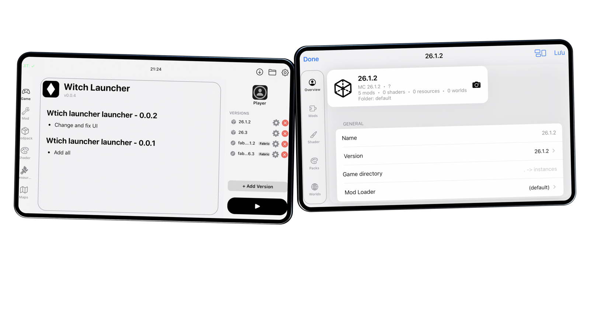

MINECRAFT: JAVA EDITION ON YOUR iPHONE.
Witch Launcher brings the full Java Edition to iPhone & iPad — mods, shaders, six renderers and Java runtimes inside a touch-first launcher, powered by Metal.

GL 4.6.
gl4es → TGLMT, with Zink, LTW and MoltenVK in between. Sodium + Iris shaders on device.
locales.
Full RTL coverage, signed plugins — and no accounts needed for local play.
Free, period.
A community fork of Amethyst-iOS. No ads, no entitlement fees, no lock-in.
Every version.
Every loader.
From the earliest Beta to the newest snapshot. Vanilla, Fabric, Quilt, Forge, NeoForge and OptiFine — each one isolated in its own profile with its own mods, worlds and packs.
- Beta_a1.2 → latest release & snapshots
- Fabric & Quilt install right from the version picker
- Forge / NeoForge installer JAR import
- Isolated per-profile instances

Modrinth & CurseForge,
built in.
Browser, dependency resolution and one-tap install for mods, modpacks, shader packs, resource packs and adventure maps — without leaving the launcher.
- In-app content browser for mods, packs & shaders
- Automatic dependency resolution
- CurseForge
manifest.jsonpack import - Per-profile: mods · shaders · resource packs · worlds

A shader pipeline
that survives iOS.
Sodium + Iris on the TGLMT renderer, GLSL shader caches and FSR 1.0 upscaling. Unicorns, volumetric light and PBR on a phone — quietly.
- Sodium + Iris shader mod support on TGLMT
- Per-renderer shader cache tuning
- FSR 1.0 upscaling & resolution scale
- Frame Generation (MADI · camera reproject)

Java 8 → 25.
Downloaded in-app.
Microsoft, local, demo and Ely.by accounts. Java 8 to 25 dropped in by a multi-thread downloader, with LWJGL 3.3.3 → 3.4.1 selectable per profile.
- Java 8 / 17 / 21 / 25 runtime manager
- Multi-threaded downloads, custom JVM args & memory
- Microsoft · local · demo · Ely.by
- In-app self-update: Auto / Beta / Stable channels

Dress it your way.
Themes, accent colors, blur, borders, fonts and app icons. Signed .plgw plugins can add JavaScript, native modules and whole settings panels.
- Themes · fonts · icons · blur · borders
- 52 languages including RTL locales
- Signed .plgw plugin system
- Built-in StikJIT on iOS 17.4+



Performance HUD with FPS / CPU / GPU / RAM / temperature / battery. Record sessions, export charts as PNG or PDF, and tune per-renderer options like frame pacing, shader caches and max FPS.

11 FRAMES · RECORDED ON-DEVICE · TGLMT / GL 4.6
SideStore / AltStore
Sideload the downloaded .ipa. Enable JIT over the paired VPN connection or attach StikDebug.
TrollStore
Install the .tipa build. Use the TrollStore JIT entitlement — no replays needed.
Built-in StikJIT
Witch can launch its own JIT helper with a pairing file and LocalDevVPN — no second app.
Jailbroken
Sign and install directly. JIT is available straight from the jail, no helper required.
JIT is what makes Java run at full speed — most setup hurdles land here. The JIT guide covers every method, pairing files and the built-in helper.
Builds are unsigned — you pick the signing method: SideStore, AltStore, TrollStore or your own certificates. Read the getting started guide first.